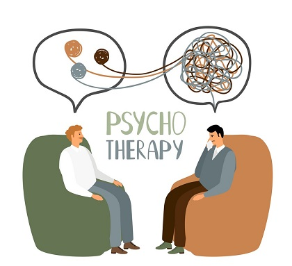
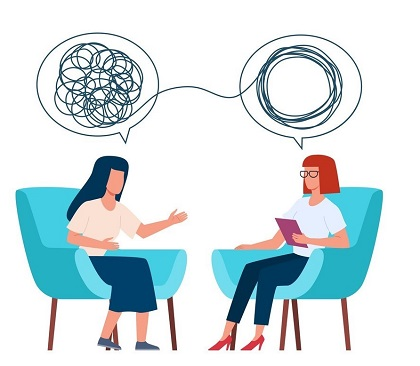

4.psychotherapy sessions
Psychotherapy is a general term for treating mental health problems by talking with a psychiatrist, psychologist, or other mental health provider.
During psychotherapy, you learn about your condition, moods, feelings, thoughts and behaviors.
Psychotherapy helps you learn how to take control of your life and handle difficult situations through healthy coping skills.
There are many types of psychotherapy, each with its own approach. The type of psychotherapy that's right for you
depends on your individual situation. Psychotherapy is also known as talk therapy, counseling, psychotherapy, or simply therapy.
Types of psychotherapy
There are many types of effective psychotherapy. Some are better than others at treating disorders and medical conditions. In many cases, therapists use a combination of techniques.
Your therapist will take your specific medical condition and preferences into account to determine which approach may be best for you.
Although many therapists are available, some psychotherapy techniques have been shown to be effective, including:
- Cognitive behavioral therapy (CBT), which helps you identify unhealthy and negative beliefs and behaviors and replace them with healthy, positive ones.
- Dialectical behavior therapy, a type of cognitive behavioral therapy that teaches behavioral skills to help you deal with stress,
manage your feelings and improve your relationships with others.
- Acceptance and commitment therapy, which helps you recognize and accept your thoughts and feelings and commit to making changes,
which increases your ability to cope with and adapt to your medical conditions.
- Psychodynamic and psychoanalytic therapy, which focus on increasing awareness of unconscious thoughts and behaviors,
adding new insights into your motivations and resolving conflicts.
- Interpersonal psychotherapy, which focuses on treating problems with your current relationships with other people to improve
interpersonal skills and how you relate to others, such as family, friends and colleagues.
- Supportive psychotherapy, which supports your ability to cope with stress and difficult situations
Psychotherapy is offered in various forms, including individual, pair (for couples), family or group therapy sessions, and can be effective for all age groups.


**TO BOOK CLICK HERE**